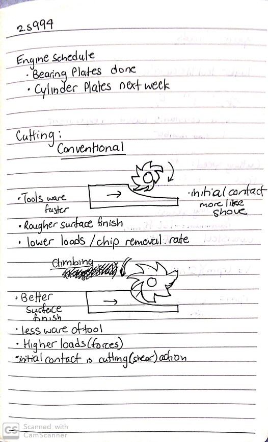
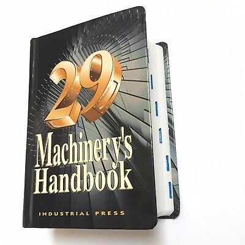
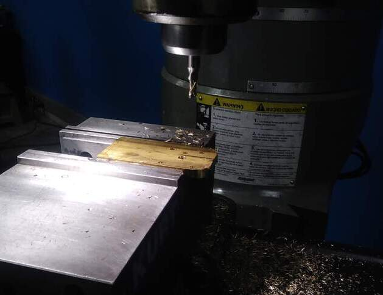
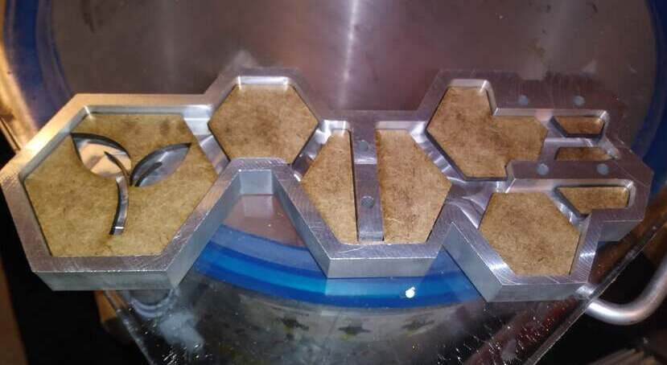

2.s994 (MIT Pappalardo Machinist Apprenticeship) is a semester long apprenticeship for student who want to develop their machining capabilities and gain experience in design mentorship. We spend the class advising 2.007 students on how best to go about designing and buildign their robots for the competition, and simultaneously we develop our machinist skills by machining a sterling engine.

We spent the beginning of the semester developing the CAD our individual engines. In this time we reviewed the basics of machining and learned to use our machinery's handbook.


The sterling engine includes upwards of 15 machined pieces, with varying complexity. A bulk of the semester went towards machining amidst mentoring students towards in their 2.007 robot design and building. Both the apprenticeship and the 2.007 class share the Pappalardo Lab space.

The greatest distinguishing feature between apprentice engines is the base for the enginer. The base design being largely independent from the functionality of the engine itself gives apprentices freedom to create more expressive base. I chose to play with hexagonal shapes in my design. I also included multiple material, so my base includes a laser cut wood inlay, set in a clear resin.

The final stretch of the semester was dedicated towards assembly. The same care put towards maching to meet part tolerances goes into assembly because accidental misalignment during assembly can completely compromise the operation of the engine because the thermal cycle is very sensitive inefficiencies.
"IT'S SPINNINNGG!!"